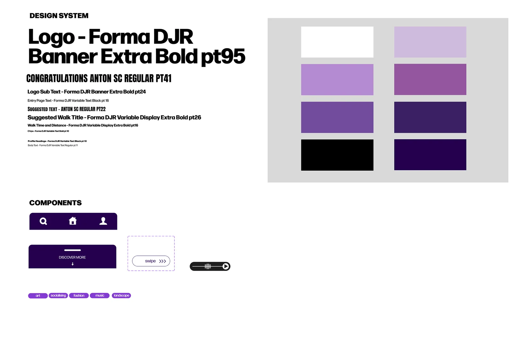
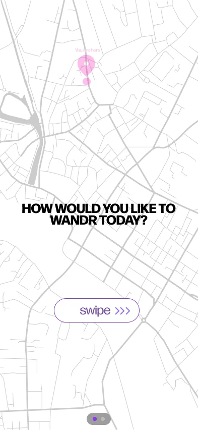
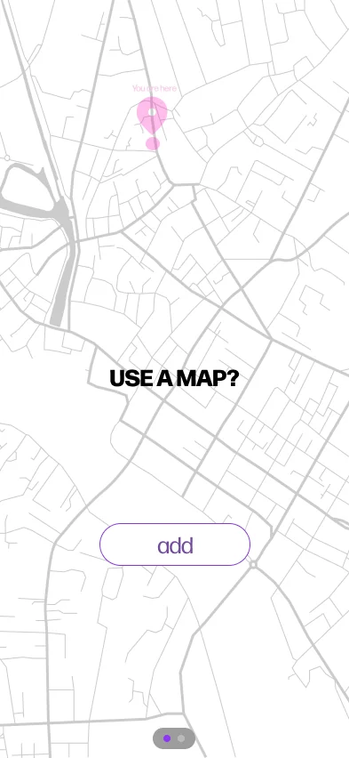
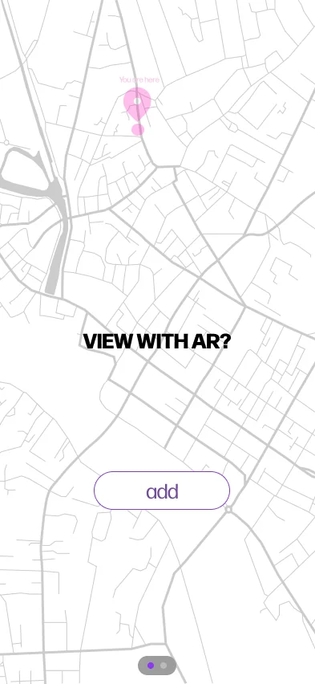
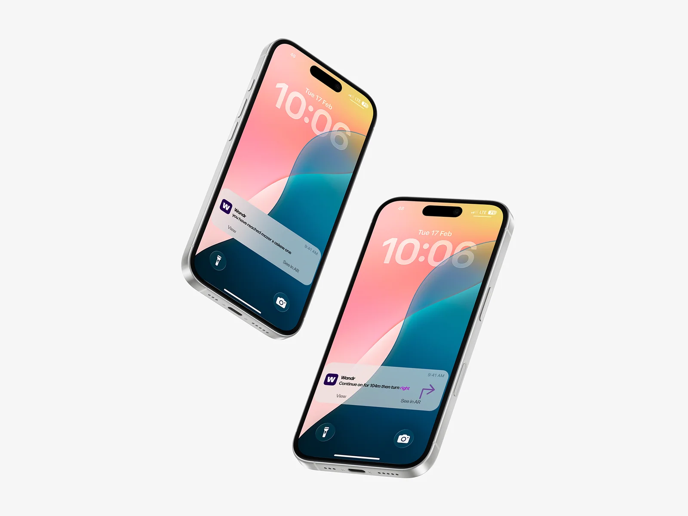

College project · UX/UI design
Wandr
A group project imagining Limerick’s cultural life as a walkable digital archive.

Project brief
As a group, we imagined how people in 2050 might explore Limerick’s street art, fashion and independent businesses as they existed in 2026.
My role
Designer (student)
Process & sketches
We gathered different perspectives on the city and translated them into mapped walks, notifications and augmented reality overlays.
Design decisions
Bold headings echo street signage. A pale map keeps the streets legible, while purple identifies routes and controls. Notifications let walkers look up from the screen.
Outcome
The concept follows a walker from choosing a route through to a summary of the places they discovered.
Design details









